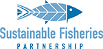
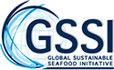
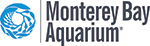

Key Partners
Building a thriving, long-term seafood industry relies on strong
partnerships among retailers, importers, producers, NGOs, fishermen, and
governments. The Fishin’ Company has many close partnerships with
leading organizations that are deeply committed to the growth and
sustainability of the seafood industry, and we are honored to work with
them toward common sustainability goals.
The Global Aquaculture Alliance (GAA) and its certifying body, Best
Aquaculture Practices (BAP), have been driving factors in building an
ever-growing aquaculture industry that can be trusted and is dependable.
The Fishin’ Company has supported and partnered with GAA and BAP for
many years, and we wholeheartedly believe in their commitment to
constant improvement.

The Sustainable Fisheries Partnership (SFP) works to develop fisheries
and aquaculture efforts into sustainable and responsible sources of
seafood. Their leadership and expertise in all areas of seafood
sustainability have led to the transformation of many crucial fisheries.
The Fishin’ Company has supported SFP in numerous Fishery Improvement
Projects (FIPs) and Aquaculture Improvement Projects (AIPs) around the
world by providing market support, financial resources, supplier
roundtable presence, and more.

The Global Seafood Sustainability Initiative (GSSI) Benchmarking Tool is
the first collective and non-competitive approach to provide clarity on
seafood certification worldwide. GSSI will publicly recognize seafood
certification schemes that meet GSSI Components grounded in the Code of
Conduct for Responsible Fisheries and the FAO Guidelines for seafood
certification and eco-labelling. As a strong supporter of GSSI, we
pledge to include the outcomes of the GSSI Benchmark Tool in our daily
operations by recognizing all GSSI-recognized certification schemes as
acceptable when sourcing certified seafood. We encourage companies
across the seafood sector worldwide to join in our commitment.

The Monterey Bay Aquarium’s Seafood Watch program helps consumers and
businesses choose seafood that is fished or farmed in ways that protect
sea life and habitats, both now and in the future. Their recommendations
indicate which seafood items are “Best Choices” or “Good Alternatives”
and which ones you should “Avoid.” They seek to raise public awareness
about sustainable seafood issues through resources like their consumer
guides, mobile apps, and outreach efforts. As a partner, we commit to
selling only environmentally responsible seafood and to helping
transform the marketplace in favor of more responsible fisheries and
aquaculture operations.